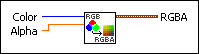
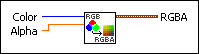

Color Change VI
Owning Palette: Helpers VIs
Requires: Full Development System
Converts an RGB color and an alpha into an RGBA cluster that you can apply to a 3D object.

 Add to the block diagram Add to the block diagram |
 Find on the palette Find on the palette |
Owning Palette: Helpers VIs
Requires: Full Development System
Converts an RGB color and an alpha into an RGBA cluster that you can apply to a 3D object.

| Add to the block diagram |
Find on the palette |
 |
Color is the color that you want to convert to its respective red, green, and blue components. | ||||||||
 |
Alpha specifies the level of opacity of the RGB color when the color is applied to the 3D object. Alpha must be a value between 0 and 1, where 0 is transparent and 1 is opaque. The default is 1.
|
||||||||
 |
RGBA is the input color converted to the RGBA format.
|